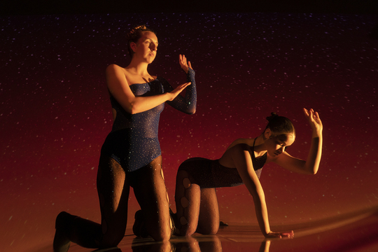
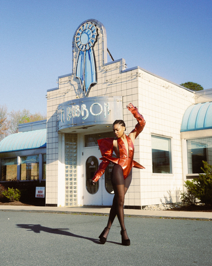
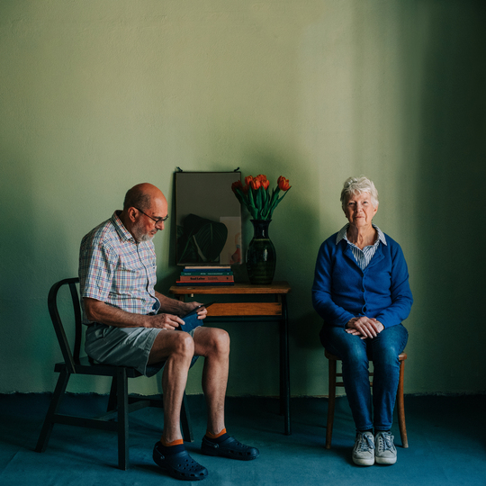

Tendințe
Sursa: Milano FW
Evenimente
Sursa: Vogue
Galerie
  Sursa poze: Vogue Magazine
Prognoze
| Lună | Prognoză |
|---|---|
| Aprilie | Îmbrăcăminte lejeră și culori pastelate |
| Iunie | Accente strălucitoare și imprimeuri florale |
Sursa: Tendinte
Sursa: Milano FW
Sursa: Vogue
Sursa poze: Vogue Magazine
| Lună | Prognoză |
|---|---|
| Aprilie | Îmbrăcăminte lejeră și culori pastelate |
| Iunie | Accente strălucitoare și imprimeuri florale |
Sursa: Tendinte